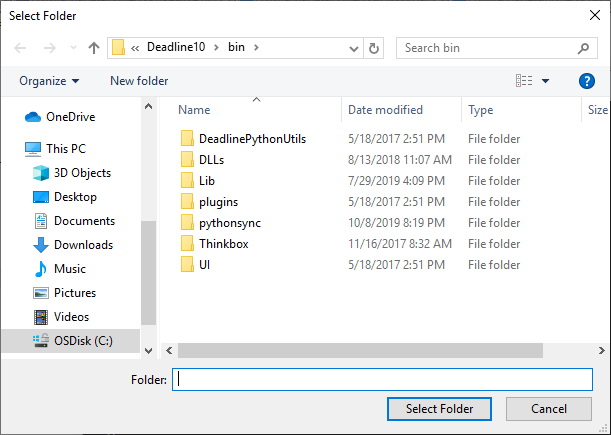
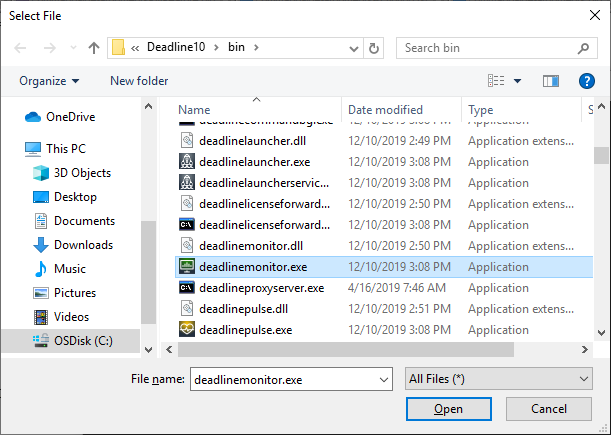
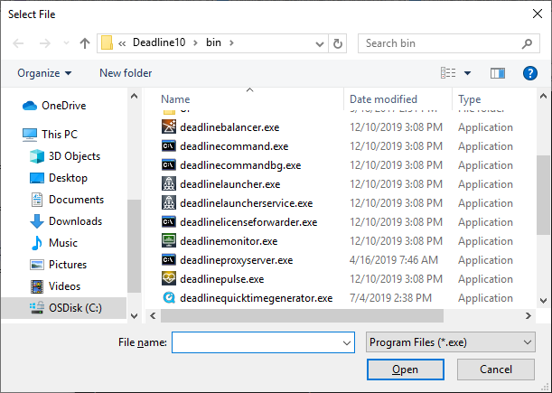
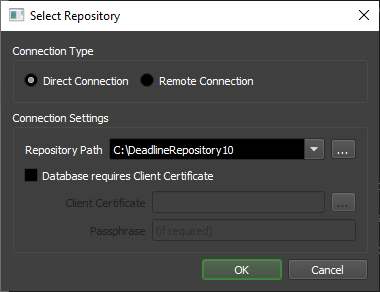
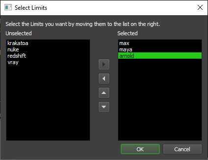
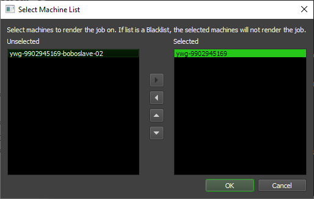
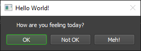

System Functions and Dialogs - Command Arguments¶
File and Directory Functions¶
CheckFilePermissions¶
Description:
Checks the read/write permissions on the file
Aliases: CheckFilePermissions, FileCheck
Syntax:
deadlinecommand -CheckFilePermissions [<ReadOnly/WriteOnly>] [<Quiet>] <Filename> |
deadlinecommand -FileCheck [<ReadOnly/WriteOnly>] [<Quiet>] <Filename> |
Arguments:
Argument |
Description |
|---|---|
<ReadOnly/WriteOnly> |
Checks both if omitted (optional) |
<Quiet> |
Print only SUCCESS or errors (optional) |
<Filename> |
The file to check |
Example:
C:\>deadlinecommand -FileCheck
Error: no process name specified
C:\>deadlinecommand -FileCheck "C:\Temp\deadline.txt"
Checking permissions on file 'C:\Temp\deadline.txt' from user account 'DOMAIN\SomeUser'
Verifying read permissions...SUCCESS
Verifying write permissions...SUCCESS
C:\>deadlinecommand -FileCheck Quiet "C:\Temp\deadline.txt"
SUCCESS
SUCCESS
C:\>deadlinecommand -CheckFilePermissions ReadOnly "C:\Temp\deadline.txt"
Checking permissions on file 'C:\Temp\deadline.txt' from user account 'DOMAIN\SomeUser'
Verifying read permissions...SUCCESS
C:\>deadlinecommand -CheckFilePermissions WriteOnly "C:\Temp\deadline.txt"
Checking permissions on file 'C:\Temp\deadline.txt' from user account 'DOMAIN\SomeUser'
Verifying write permissions...SUCCESS
GetCommonAppPath¶
Description:
Prints out the path to the common application data folder.
Syntax:
deadlinecommand -GetCommonAppPath |
Arguments:
Argument |
Description |
|---|---|
. |
No arguments |
Example:
C:\>deadlinecommand -GetCommonAppPath
C:\ProgramData
Get Directory¶
GetBinDirectory¶
Description:
Displays the bin directory of the Deadline Client software.
Syntax:
deadlinecommand -GetBinDirectory |
Arguments:
Argument |
Description |
|---|---|
. |
No arguments |
Example:
C:\>deadlinecommand -GetBinDirectory
C:\Program Files\Thinkbox\Deadline10\bin
GetCurrentUserHomeDirectory¶
Description:
Displays the current user home directory of the Deadline Client software.
Syntax:
deadlinecommand -GetCurrentUserHomeDirectory |
Arguments:
Argument |
Description |
|---|---|
. |
No arguments |
Example:
C:\>deadlinecommand -GetCurrentUserHomeDirectory
C:\Users\SomeUser\AppData\Local\Thinkbox\Deadline10
GetHomeDirectory¶
Description:
Displays the home directory of the Deadline Client software.
Syntax:
deadlinecommand -GetHomeDirectory |
Arguments:
Argument |
Description |
|---|---|
. |
No arguments |
Example:
C:\>deadlinecommand -GetHomeDirectory
C:\ProgramData\Thinkbox\Deadline10
GetNetworkDrives¶
Description:
Display all network drives.
Syntax:
deadlinecommand -GetNetworkDrives |
Arguments:
Argument |
Description |
|---|---|
. |
No arguments |
Example:
C:\>deadlinecommand -GetNetworkDrives
M:\
P:\
V:\
Z:\
Registry Keys¶
GetRegistryKeyValue¶
Description:
Returns the specified value for the specified registry key.
Syntax:
deadlinecommand -GetRegistryKeyValue <Key Name> <Value Name> [<Default Value>] |
Arguments:
Argument |
Description |
|---|---|
<Key Name> |
The name of the registry key |
<Value Name> |
The name of the value to get |
<Default Value> |
(optional) The default value to return |
Example:
C:\>deadlinecommand -GetRegistryKeyValue "HKEY_CURRENT_USER\Software\FLEXlm License Manager" "SOME_LICENSE_FILE"
C:\Users\SomeUser\Documents\Some_license.lic
SetRegistryKeyValue¶
Description:
Adds and/or sets the specified value for the specified registry key.
Syntax:
deadlinecommand -SetRegistryKeyValue <Key Name> <Value Name> <Value Data> |
Arguments:
Argument |
Description |
|---|---|
<Key Name> |
The name of the registry key |
<Value Name> |
The name of the value to set/add |
<Value Data> |
The string data to set the value to |
Example:
C:\>deadlinecommand -SetRegistryKeyValue "HKEY_CURRENT_USER\Software\FLEXlm License Manager" "SOME_LICENSE_FILE" "C:\Users\SomeUser\Documents\Some_license.lic"
Opening "HKEY_CURRENT_USER\Software\FLEXlm License Manager"...
Setting "SOME_LICENSE_FILE" to value "C:\Users\SomeUser\Documents\Some_license.lic"
RemoveRegistryKeyValue¶
Description:
Removes the specified value for the specified registry key. Enable Recursive to delete sub-keys.
Syntax:
deadlinecommand -RemoveRegistryKeyValue <Key Name> <Value Name> [<Recursive>] |
Arguments:
Argument |
Description |
|---|---|
<Key Name> |
The name of the registry key |
<Value Name> |
The name of the value to remove |
<Recursive> |
True/False - whether to delete sub-keys (optional, default is False) |
Example:
C:\>deadlinecommand -RemoveRegistryKeyValue "HKEY_CURRENT_USER\Software\FLEXlm License Manager" "SOME_LICENSE_FILE"
Opening "HKEY_CURRENT_USER\Software\FLEXlm License Manager"...
Removing "SOME_LICENSE_FILE"
Processes¶
GetProcess¶
Description:
Displays information for all running processes with the given name.
Syntax:
deadlinecommand -GetProcess <Process Name> [<Use Ini Display>] |
Arguments:
Argument |
Description |
|---|---|
<Process Name> |
Process name to search for |
<Use Ini Display> |
true/false (optional, default is false) |
Example:
C:\>deadlinecommand -GetProcess 3dsmax
ProcessName=3dsmax
ProcessId=5376
MemoryUsage=191.73 MB
VirtualMemory=1.57 GB
C:\>deadlinecommand -GetProcess DeadlineMonitor True
[deadlinemonitor]
ProcessName=deadlinemonitor
ProcessId=18936
MemoryUsage=211.25 MB
VirtualMemory=366.73 MB
GetProcesses¶
Description:
The output is similar to GetProcess, except that it lists all processes, with or without Ini Header based on the optional argument:
Syntax:
deadlinecommand -GetProcesses [<Use Ini Display>] |
Arguments:
Argument |
Description |
|---|---|
<Use Ini Display> |
true/false (optional, default is false) |
GetProcessNames¶
Description:
Displays all running process names.
Syntax:
deadlinecommand -GetProcessNames <Process Name> |
Arguments:
Argument |
Description |
|---|---|
<Process Name> |
Process name to search for (optional) |
StartProcess¶
Description:
Starts the program or the program associated with the file.
Syntax:
deadlinecommand -StartProcess <Filename> |
Arguments:
Argument |
Description |
|---|---|
<Filename> |
The path to a given application or file |
Example:
C:\>deadlinecommand -StartProcess notepad.exe
The Notepad application opens on Windows…
C:\>deadlinecommand -StartProcess nosuchapp.exe
Error: The system cannot find the file specified (System.ComponentModel.Win32Exception)
TestProtectedConfig¶
Description:
Runs a test to make sure that a Repository’s protected configuration file will work properly on this machine.
Syntax:
deadlinecommand -TestProtectedConfig |
Arguments:
Argument |
Description |
|---|---|
. |
No arguments |
Example:
C:\>deadlinecommand -TestProtectedConfig
Deadline protected configuration test was successful.
KillProcess¶
Description:
Kills all processes with specified name or Process ID.
When using a name, all processes with the same name will be killed.
When using the Process ID, only the process with the specified Process ID will be killed.
Syntax:
deadlinecommand -KillProcess <Process Name Or ID> |
Arguments:
Argument |
Description |
|---|---|
<Process Name Or ID> |
Name of the process or process ID |
Output:
Prints a report “Killed <name of process>:<PID>”, or nothing if the process does not exist.
Example:
C:\>deadlinecommand -KillProcess deadlineworker
Killed deadlineworker:22608
C:\>deadlinecommand -Prompt
GetProcess deadlineworker
ProcessName=deadlineworker
ProcessId=12180
MemoryUsage=153.16 MB
VirtualMemory=108.18 MB
ProcessName=deadlineworker
ProcessId=2980
MemoryUsage=150.36 MB
VirtualMemory=103.39 MB
KillProcess 12180
Killed deadlineworker:12180
Exit
C:\>deadlinecommand -KillProcess Eve
C:\>
Note
If the process name or ID does not exist, no info is returned.
INI Files¶
GetIniFileSetting¶
Description:
Returns the value for the given key from the deadline.ini configuration file.
Syntax:
deadlinecommand -GetIniFileSetting <Key> |
Arguments:
Argument |
Description |
|---|---|
<Key> |
The key to get |
Example:
C:\>deadlinecommand -GetIniFileSetting
Error: No key was specified.
C:\>deadlinecommand -GetIniFileSetting LauncherListeningPort
17000
C:\>deadlinecommand -GetIniFileSetting LifeTheUniverseAndEverything
Error: Key not found.
Plugin Settings¶
UpgradePluginSettings¶
Description:
Used by installer to upgrade the plugins without overriding user configured settings.
Syntax:
deadlinecommand -UpgradePluginSettings |
Arguments:
Argument |
Description |
|---|---|
. |
No arguments |
Warning
For Internal Use Only.
File Dialogs¶
GetDirectory¶
Description:
Opens a folder browser starting at the current path, or at the initial path if supplied.
Aliases: GetDirectory, SelectDirectory
Syntax:
deadlinecommand -GetDirectory [<Initial Path>] |
deadlinecommand -SelectDirectory [<Initial Path>] |
Arguments:
Argument |
Description |
|---|---|
<Initial Path> |
The path to the initial directory (optional) |
Output:
Prints out the resulting directory path.
No result is printed if the Cancel button is pressed in the dialog.
Example:
C:\>deadlinecommand -GetDirectory
A “Select Folder” dialog opens:
Navigate to a folder and press the Select Folder button:
C:\Program Files\Thinkbox\Deadline10\bin
SelectFilenameLoad¶
Description:
Opens a file load dialog.
Syntax:
deadlinecommand -SelectFilenameLoad [<Initial Path>] [<Filter>] |
Arguments:
Argument |
Description |
|---|---|
<Initial Path> |
The path to the initial filename (optional) |
<Filter> |
The filter string (optional) - an example filter would look like “Text Files (.txt);;All Files (.*)” |
Output:
Prints out the selected existing filename path.
Example:
C:\>deadlinecommand -SelectFilenameLoad
A “Select File” dialog showing all files opens:
Select a file and press Open:
C:\Program Files\Thinkbox\Deadline10\bin\deadlinemonitor.exe
deadlinecommand -SelectFilenameLoad "" "Program Files (*.exe);;All Files (*.*)"
A “Select File” dialog showing by default only executable files pops up:
Note
No result is printed if the Cancel button is pressed in the dialog.
SelectFilenameSave¶
Description:
Opens a file save dialog
Syntax:
deadlinecommand -SelectFilenameSave [<Initial Path>] [<Filter>] |
Arguments:
Argument |
Description |
|---|---|
<Initial Path> |
The path to the initial filename (optional) |
<Filter> |
The filter string (optional) - an example filter would look like “Text Files (.txt);;All Files (.*)” |
Output:
Prints out the filename to save.
Deadline Dialogs¶
SelectRepository¶
Description:
Select the repository root from a dialog.
Aliases: SelectRepository, SelectNetwork
Syntax:
deadlinecommand -SelectRepository |
Arguments:
Argument |
Description |
|---|---|
. |
No arguments |
Output:
- If Remote Connection was selected, prints
The Remote Connection Server’s IP address and Port, followed by the path to the
Deadline10RemoteClient.pfxcertificate.The keyword
Remote.
- If Direct Connection was selected, prints
The Deadline Repository path
The keyword
Repository
If Cancel was pressed, prints the message
Action was cancelled by user.
Example:
C:\>deadlinecommand -SelectNetwork
The Deadline “Select Repository” dialog opens:
Press the OK button:
C:\DeadlineRepository10
Repository
If Remote Connection was selected, the output looks like this:
10.0.0.42:4433;C:/DeadlineCerts/RCS/Deadline10RemoteClient.pfx
Repository
SelectLimitGroups¶
Opens the standard Deadline Limits dialog. Lets you select a list of Limits.
Output:
Prints a comma-separated list of the Limits moved to the right-hand-side Selected list.
Argument |
Description |
|---|---|
<Initial Limits> |
A comma-separated list of the initially selected limits (optional) |
Example:
C:\>deadlinecommand -SelectLimitGroups
The “Select Limits” dialog opens:
After pressing OK, the Limits listed in the Selected list will be printed:
max,maya,arnold
If Cancel is pressed, the call prints:
Action was cancelled by user
SelectMachineList¶
Description:
Allows you to select a list of machines
Syntax:
deadlinecommand -SelectMachineList <Initial Machines> |
Arguments:
Argument |
Description |
|---|---|
<Initial Machines> |
A comma-separated list of the initially selected machines (optional) |
Output:
Prints a comma-separated list of the Machines moved to the right-hand-side Selected list.
Example:
C:\>deadlinecommand -SelectMachineList
The “Select Machine List” dialog opens:
Move a machines to the Selected list and press OK:
ywg-9902945169
ShowMessageBox¶
Description:
Displays a simple dialog box with optional title text, message text, and one or more buttons.
Aliases: ShowMessageBox, ShowUserDialog
Syntax:
deadlinecommand -ShowMessageBox [title <Title>] [message <Message>] [buttons <Buttons>] |
deadlinecommand -ShowUserDialog [title <Title>] [message <Message>] [buttons <Buttons>] |
Arguments:
Argument |
Description |
|---|---|
title <Title> |
The dialog title. Defaults to “Deadline Message Box” if not specified. |
message <Message> |
The message text. Defaults to empty string “” if not specified. |
buttons <Buttons> |
A comma-separated list of buttons. Defaults to a single OK button if not specified. |
Output:
Prints out the pressed button.
Example:
C:\>deadlinecommand -ShowMessageBox title "Hello World!" message "How are you feeling today?" buttons "OK","Not OK","Meh!"
The message dialog opens:
Press the Not Ok button:
Not OK
PopupMessage¶
Description:
Displays a popup message.
Syntax:
deadlinecommand -PopupMessage <Message> [<Delete Message File>] |
Arguments:
Argument |
Description |
|---|---|
<Message> |
The message to display. This can be a string, or a path to a file that contains a message. |
<Delete Message File> |
(optional) If the message is stored in a file, specify ‘true’ to delete the file after the window is closed. |
C:\>deadlinecommand -PopupMessage "So long and thanks for all the fish!"
LaunchPreviewStyleWindow¶
Description:
Previews a style.
Syntax:
deadlinecommand -LaunchPreviewStyleWindow <Style> |
Arguments:
Argument |
Description |
|---|---|
<Style> |
The style info to preview (JSON format) |
Security Keys¶
GenerateRSAKeys¶
Description:
Creates and saves RSA key-pairs for internal use by Deadline. Administrator/root privileges might be required to create machine-wide keys.
Syntax:
deadlinecommand -GenerateRSAKeys [<UserSpecific>] |
Arguments:
Argument |
Description |
|---|---|
<UserSpecific> |
If True, keys specific to the current OS user will be generated. (Default: False) |
GetPublicEncryptionKey¶
Description:
Prints out the Public Key used for encryption of messages sent to this Deadline client, in XML format. This creates a key if one is not already present, and therefore might require administrator/root privileges when retrieving the machine-wide key.
Syntax:
deadlinecommand -GetPublicEncryptionKey [<UserSpecific>] |
Arguments:
Argument |
Description |
|---|---|
<UserSpecific> |
If True, key specific to the current OS user will be returned. (Default: False) |
GetPublicSigningKey¶
Description:
Prints out the Public Key used for verification of signatures by this Deadline client, in XML format. This creates a key if one is not already present, and therefore might require administrator/root privileges privileges when retrieving the machine-wide key.
Syntax:
deadlinecommand -GetPublicSigningKey [<UserSpecific>] |
Arguments:
Argument |
Description |
|---|---|
<UserSpecific> |
If True, key specific to the current OS user will be returned. (Default: False) |
Certificates¶
SaveCertificatePassword¶
Description:
Allows you to change the password that is used to decrypt the given client certificate on this Machine, when connecting to the specified repository.
Syntax:
deadlinecommand -SaveCertificatePassword <Connection String> <Client Certificate> [<Certificate Password>] [<All Users>] |
Arguments:
Note
This is not currently implemented when using a Proxy connection.
Argument |
Description |
|---|---|
<Connection String> |
Required. When using a Proxy connection, this is a string of format <HOST>:<PORT>. When using Direct connection, this is the path to the root of the Repository. |
<Client Certificate> |
Required. The path to the x509 client certificate that is used to connect to the Repository with TLS/SSL. |
<Certificate Password> |
Optional. The password to encrypt and save on this machine. If blank, will clear any existing saved password for the specified certificate. Default is empty (ie, will clear existing password). |
<All Users> |
Optional. If true, the specified password will be saved for all users on this machine. Otherwise, it will only be saved for the current user. Defaults to False. |